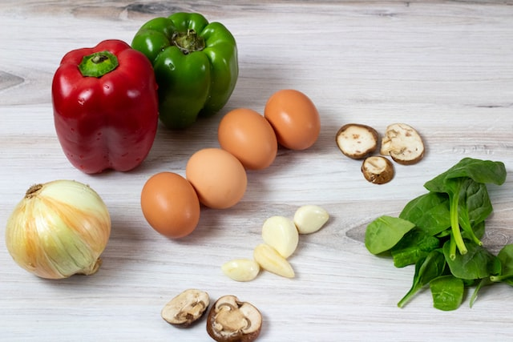
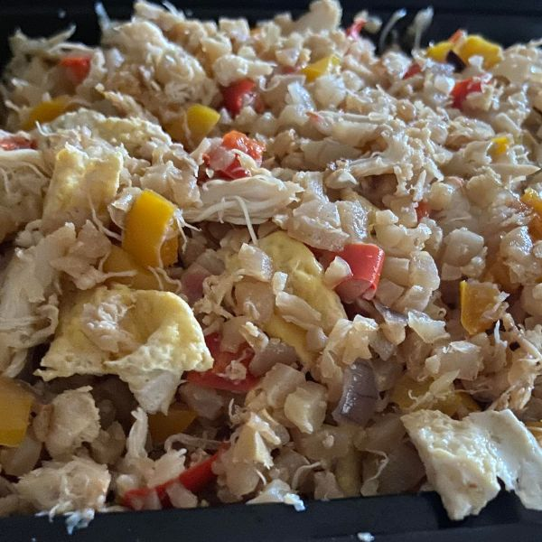

Cauliflower Fried Rice
Prep: 15 minutes
Cook: 20 minutes
Yields: 8 servings
Ingredients
- 2 teaspoon vegetable oil
- 2 large eggs
- 1/4 teaspoon salt
- 1 cup chopped scallions
- 3 garlic cloves, minced
- 2 pounds frozen cauliflower
- 1/4 teaspoon red pepper flakes
- 1 bell pepper, diced
- 1 red onion, diced
- 2-3 tablespoons light soy sauce
- 1 teaspoon rice vinegar
- 1 teaspoon sesame oil


- Add a teaspoon of oil in a large nonstick skillet over medium heat. Add the eggs and a
pinch
of salt and cook until scrambled. Set the eggs aside on a plate.
- Saute the green scallion and garlic in oil until golden brown. Add the cauliflower, soy
sauce, red pepper flakes and salt. Cook, stirring often, for about 10-15 minutes.
- Add vegetables of your choice (peas, carrots, bell peppers, red onion, etc) to give a
natural
sweetness to the dish.
- Add the scrambled eggs and stir in the rice vinegar for another 3-5 minutes.